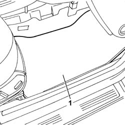
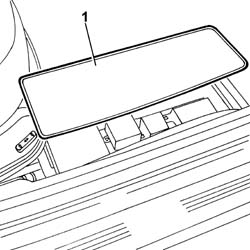
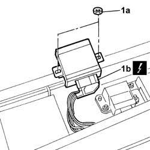

5540C50 Gas discharge LIGHT CLUSTER CORRECTION/ALIGNMENT CONTROL UNIT - R.R.
- Path
- Procedures > 55 ELECTRICAL EQUIPMENT > 5540 EXTERIOR LIGHTING > 5540C HEADLAMP/LIGHT CLUSTER ALIGNMENT CORRECTION DEVICES > 5540C50 Gas discharge LIGHT CLUSTER CORRECTION/ALIGNMENT CONTROL UNIT - R.R.
- Kind
- repair procedure (removal / refitting; the operation number is the code)
- Applies to
- all engines; all production periods
- Interactive page
- https://sloeber94.github.io/elrnDB-lThss/en/#/148517
Applies to: all engines; all production periods
 Removing
Removing
 Refitting
Refitting- Disconnect the negative battery terminal.
1. Release and remove the front carpet, passenger side.

Applies to: all engines; all production periods
1. Release the electronic control unit access cover, passenger side.

Applies to: all engines; all production periods
1. Undo the fixing nuts (1a) and disconnect the electrical connector (1b).
 | Description | Connector |
|---|---|---|
1b | Headlamp alignment control unit (CAF) | M073 |

Applies to: all engines; all production periods
Refitting
Removing- Connect the electrical connector for the headlamp alignment control unit and place it in position.
| Description | Connector |
|---|---|---|
. | Headlamp alignment control unit (CAF) | M073 |
- Tighten the nuts fixing the headlamp alignment control unit.
- Reposition the electronic control unit access cover, passenger side.
- Reposition the front carpet, passenger side.
- Connect the negative battery terminal.